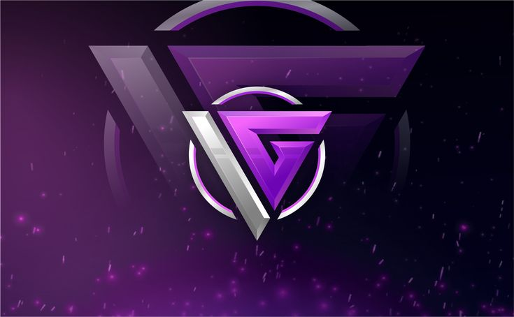

Perjalanan Kami
IGO Store didirikan oleh Faqih Zihnil Ulya. Awalnya toko ini dibuat hanya iseng-iseng, dengan niat agar para bocil bisa membeli diamond dengan harga murah dan terjangkau.
Seiring waktu, IGO Store berkembang pesat. Pembelinya bukan hanya bocil, tetapi semua usia dari bayi, anak-anak, remaja, hingga kakek buyut ikut berbelanja di IGO Store.
Pada tahun 2021, IGO Store melakukan rebranding besar dengan mengganti logo lama menjadi logo baru sebagai simbol semangat, visi, dan profesionalisme baru.
Logo Lama
Logo Baru

Faqih Zihnil Ulya mendirikan IGO Esport untuk membentuk penjoki handal dan anak muda berbakat. Tim ini meraih prestasi: 3x MCL Champion dan 2x Rising Champion.
Menjadi masa kejayaan IGO Store sebagai store top up terlaris di seluruh dunia.
Setelah kepergian sang pendiri, IGO Store sempat mengalami penurunan peminat. Namun semangat dan warisan kebaikan, kerendahan hati, serta visi digital beliau tetap hidup di IGO Store hingga sekarang.
IGO Store didirikan sebagai toko top up sederhana berbasis WhatsApp.
IGO Store berkembang dengan website profesional dan sistem pemesanan otomatis.
Menjadi salah satu penyedia top up terbesar di Indonesia.